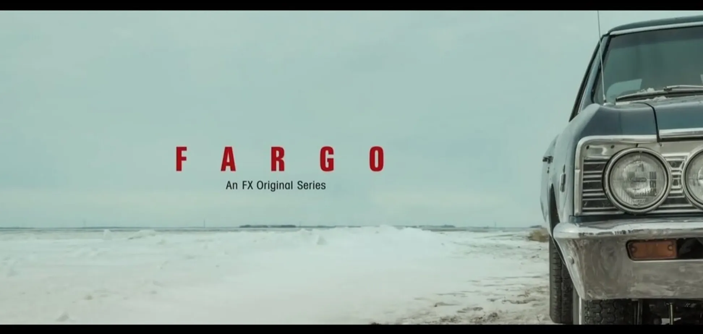

«Фарґо» (англ. Fargo) — американський телесеріал в жанрі кримінальної драми, створений Ноєм Гоулі. Проєкт натхненний однойменним фільмом 1996 братів Коен, які виступили виконавчими продюсерами серіалу. Прем'єра відбулася 15 квітня 2014 на каналі FX. Кожен сезон розповідає про окрему історію.
Повернутися на першу сторінку